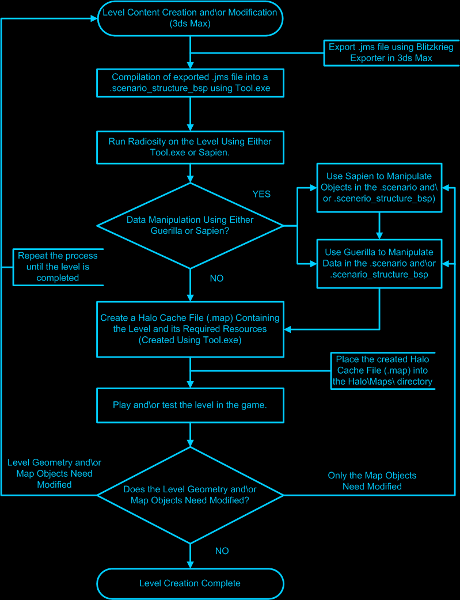

|
|
General Overview |
|
|
The following section gives a general overview for the creation of Multiplayer (MP) Levels for Halo for the PC. This section includes rules, guidelines, components and other useful information related to the creation and editing of Multiplayer environments for Halo and its various game types. |
|
|
Introduction |
|
| Halo content or game assets (levels, vehicles, weapons, characters, etc...) are created using arbitrary polygons. Arbitrary polygons and arbitrary polygon modeling has several advantages including the ability to create complex shapes and surfaces that can be either concave or convex and flexible texture mapping including UVW mapping. The arbitrary polygons are created or modeled using a 3D modeling program such as 3D Studio Max (3ds Max) or equivalent. Halo was created using 3ds Max 3.x on the Xbox and the additional content for the PC version was created using 3ds Max 5.1. |
|
|
Content Creation Path |
| The following diagram shows the work flow or content creation path when creating a Halo game environment. The subsequent sections contained under Multiplayer Level Design give information and explain each of the major steps (including tutorials) involved in the process of bringing a Halo level from the 3D modeling tool into the Halo game engine. |
| Level Content Creation Path Flowchart |

|
|
Technical Rules |
| The following are some basic technical rules that must be followed during the creation and construction of a game level in Halo. These rules must be followed to insure that the level will successfully export and compile in order to run in the game. |
| Reference Frame |
|
The level MUST have a reference frame with valid
geometry linked to the reference frame. If the level does not have a
reference frame the Blitzkrieg exporter will not export the .jms file and
will give an error dialog "There was no geometry to export". There must also be valid geometry (See Sealed World Rules below) attached or linked to the reference frame or the Blitzkrieg exporter will not export the .jms file and will give an error dialog "There was no geometry to export". For more information on the reference frame for the world mesh please see the section Creation of a Reference Frame under Level Creation - Part 1 . |
| Sealed World Rules |
|
The level MUST be sealed. While other
models (those that are placed in the level using .scenery, .vehicle, etc...
tags) used in Halo for scenery, characters, weapons and vehicles do not have
to be sealed and can have open edges, this does not hold true for the world
geometry.
The polygons used to construct the world must form a contiguous mesh that forms a sealed volume in order for the level BSP (Binary State Partition) that is used for player collision and physics to be created. The sealed volume and no open edges rule applies to objects that are included in the world mesh (for instance a floating box). As implied in the first paragraph, the sealed world and no open edges rules do not apply to models that are external to the level and are placed or populated in Sapien using their associated tags (.scenery, .vehicle, .weapon, etc...). For more information on creating the world mesh, creating a sealed world, and open edges please see the various tutorials and information found under the Level Creation - Part 1 and Level Creation - Part 2 sections. |
|
|
Multiplayer Level Limitations |
|
Multiplayer levels are very straight forward and
simple in terms of what can be placed in the level and what can operate in
the level.
The multiplayer game and levels do not have the ability to run the complicated scripting systems that are available in the single player game and levels. These systems are simply not included in the current network architecture that Halo uses for multiplayer. This limits the dynamic objects that can be placed in a multiplayer level since the majority of these kinds of objects (such as doors, light bridges, buttons, etc...) rely on the Halo scripting system to operate. The same holds true for trigger volumes, therefore trigger volumes cannot be used in multiplayer levels. Certain objects that are simple client side effects can be placed in multiplayer levels. Such objects or effects include particle emitters (such as the water fall mist in Timberland), sounds, and other simple objects. Even the Covenant portable force shields used in multiplayer maps like Danger Canyon and Gephyrophobia are not networked. No information gets sent that tells the game server that "the shield has been disrupted". In the case of the Covenant energy shield, the reason it does get turned off on both the client and the server is because the objects that affect the shield (weapons fire and explosions) DO have their information sent over the network and when they get updated on the client it affects the objects in the surrounding area. As a result, these objects can get out of synchronization with the server. This is why the use or heavy use of such objects should be avoided.
|